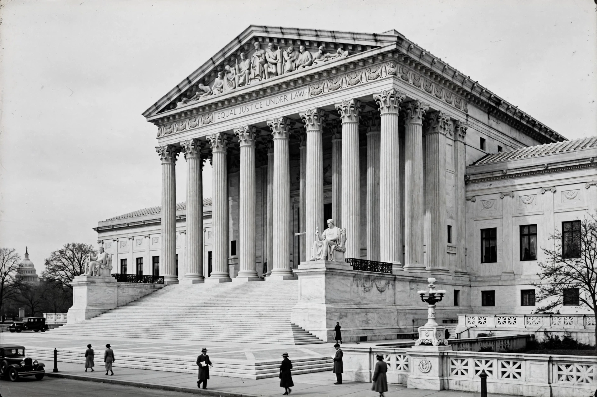

The Judicial Procedures Reform Bill of 1937, commonly known as the court-packing plan, was a legislative initiative proposed by United States President Franklin D. Roosevelt to add more justices to the Supreme Court of the United States. Announced on 5 February 1937, the bill would have allowed the President to appoint an additional justice for each sitting justice over the age of 70, up to a maximum of six new justices, expanding the Court to as many as 15 members.
| Judicial Procedures Reform Bill of 1937 | |
|---|---|
 The Supreme Court building, completed in 1935 | |
| Long title | A bill to reorganize the judicial branch of the Government |
| Announced | 5 February 1937 |
| Proposed by | President Franklin D. Roosevelt |
| Effect | Would have allowed up to six additional Supreme Court justices |
| Status | Defeated in the Senate, July 1937 |
During Roosevelt's first term, the Supreme Court struck down several key pieces of New Deal legislation, including the National Industrial Recovery Act in Schechter Poultry Corp. v. United States (1935) and the Agricultural Adjustment Act in United States v. Butler (1936). A bloc of conservative justices, nicknamed the "Four Horsemen" (James McReynolds, Pierce Butler, George Sutherland, and Willis Van Devanter), frequently voted against New Deal measures, often joined by Chief Justice Charles Evans Hughes or Justice Owen Roberts.
After Roosevelt's landslide re-election in 1936, he concluded that constitutional amendments would be too slow and instead turned to legislation that would change the composition of the Court itself. The plan was developed in secrecy, principally with Attorney General Homer Cummings, and was presented publicly as an efficiency measure to help aging justices manage their workload.
The bill provided that whenever a federal judge who had served at least ten years failed to retire within six months of reaching the age of 70, the President could appoint an additional judge to the court in question. For the Supreme Court, this could have added up to six new justices — one for each sitting justice over 70 — raising the Court's membership from nine to as many as fifteen. At the time, six justices were over 70, including four of the conservatives most hostile to the New Deal.
The proposal provoked intense opposition across the political spectrum. Critics charged that it was a transparent attempt to "pack" the Court with justices who would uphold New Deal legislation, undermining judicial independence. The Senate Judiciary Committee issued a sharply worded report condemning the bill. Chief Justice Hughes wrote a letter to the Senate, with Roosevelt's opponents reading it publicly, rebutting the claim that the Court was behind in its work.
The political landscape shifted decisively in the spring of 1937. In West Coast Hotel Co. v. Parrish, decided on 29 March 1937, the Court upheld a state minimum wage law — a change widely attributed to Justice Owen Roberts and dubbed "the switch in time that saved nine". In May, Justice Van Devanter announced his retirement, giving Roosevelt his first Supreme Court appointment. Support for the bill collapsed, and on 22 July 1937 the Senate voted 70–20 to recommit it to committee, effectively killing it. The death of Senate Majority Leader Joseph Robinson, the bill's floor manager, days earlier had further weakened its prospects.
Although the court-packing plan failed legislatively, the Supreme Court's jurisprudence changed markedly from 1937 onward, and the Court did not strike down a major piece of economic legislation on the grounds used during the earlier period for decades. Roosevelt ultimately appointed eight justices and elevated a ninth, reshaping the Court through ordinary vacancies. The episode remains a central case study in debates over court reform, judicial independence, and the separation of powers.
From Wikipedia, the free encyclopedia (recreated from memory).